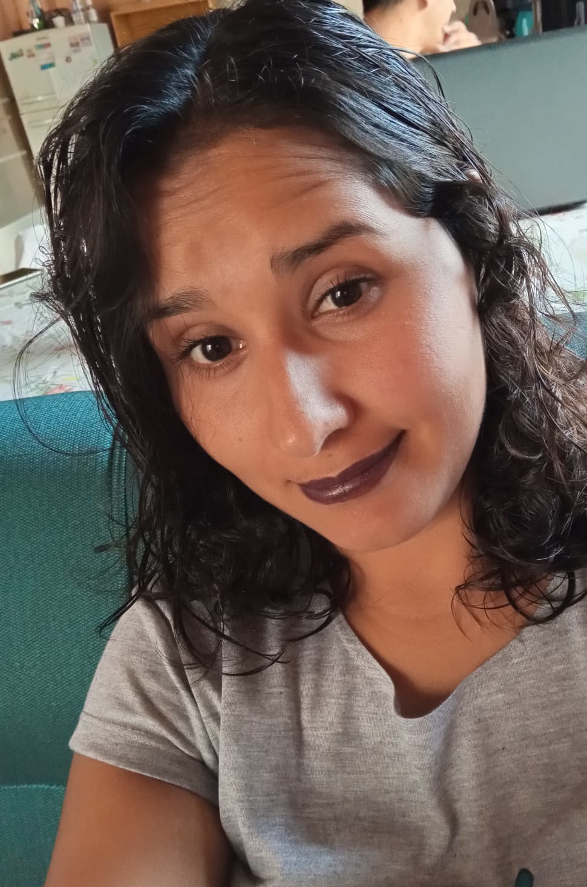

Sobre mí
"Desde pequeña siempre me ha apasionado el mundo de la moda y la costura por lo que decidí convertir mi pasión en mi profesión. Soy una costurera creativa y apasionada, que ha dedicado gran parte de su vida a perfeccionar sus habilidades en el diseño y la confección de prendas de vestir únicas y a medida. Mi enfoque se centra en crear ropa que se ajuste perfectamente a las necesidades y gustos de mis clientes, y que les haga sentir cómodos y seguros de sí mismos. Me encanta trabajar en colaboración con mis clientes, escuchando sus ideas y visiones, y utilizando mi experiencia para convertirlas en realidad. Mi objetivo final es siempre entregar una prenda de alta calidad que haga que mis clientes se sientan especiales y únicos. Además de la costura, me apasiona la moda en general y estoy siempre en la búsqueda de nuevas tendencias y técnicas. Me encanta explorar nuevos materiales, diseños y patrones, y estoy constantemente aprendiendo y perfeccionando mis habilidades para poder ofrecer un servicio aún mejor a mis clientes. Siempre estoy abierta a nuevas ideas y desafíos, y estoy emocionada de trabajar en proyectos emocionantes y creativos."
Contacto###
Desde pequeña, siempre supe que mi verdadera pasión era el mundo de la moda y la costura. A través de los años, he dedicado mi vida a perfeccionar mis habilidades en la creación de prendas únicas y a medida, diseñadas específicamente para satisfacer las necesidades y gustos de mis clientes. Me apasiona trabajar con cada uno de ellos para crear algo realmente especial, algo que les haga sentir únicos y seguros de sí mismos. Me encanta experimentar con nuevos materiales, patrones y técnicas, y siempre estoy en busca de nuevas tendencias para mejorar mi trabajo.
Para mí, la costura es mucho más que una profesión, es una forma de expresión creativa que me permite conectar con mi lado más artístico y compartirlo con los demás. Siempre estoy emocionada de trabajar en proyectos nuevos y emocionantes, y estoy dedicada a hacer todo lo posible para superar las expectativas de mis clientes.